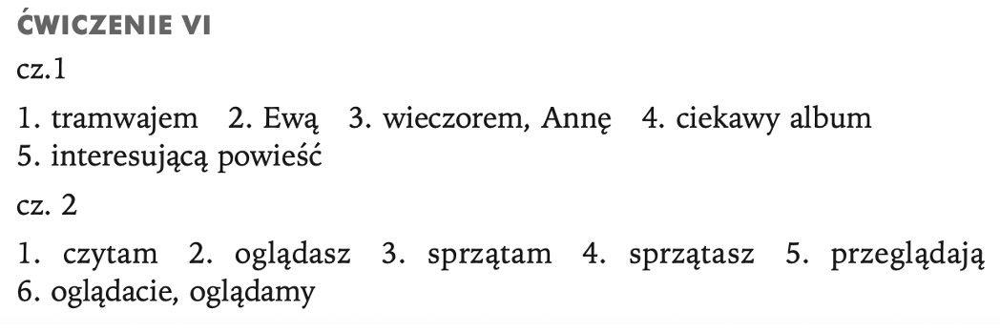

Adam: To śpiewa Anna Maria Jopek. Czy rozumiesz tekst piosenki?
Maria: Tak, rozumiem. Anna Maria Jopek i Grzegorz Turnau śpiewają bardzo wyraźnie, mają bardzo dobrą dykcję. Moja koleżanka i ja często ich słuchamy.
Adam: Czy umiesz śpiewać jakąś polską piosenkę?
Maria: Niestety, nie umiem. A ty umiesz?
Adam: Nie. Ale wiem, kto zna niejedną polską piosenkę i umie śpiewać. To mój kolega. Wiesz, który?
Maria: Tak, oczywiście. Wszyscy wiedzą. To Karol. Mieszkamy obok siebie. Słucham go zawsze, kiedy jem obiad. On ciągle śpiewa. Szkoda, że nie śpiewacie razem.
ĆWICZENIE I
ĆWIECZENIE II
Proszę wybrać odpowiednią formę czasownika (verbum):
Ćwieczenie III
Proszę wybrać odpowiednią formę rzeczownika (substantivum):
Ćwieczenie IV
Proszę budować zdania według wzoru:
Anna pyta – Adam.? Anna pyta Adama. Napisz
Czy Adam rozmawia z ......
Ewa
Anna
Karol
Jan
Adam ogląda .....
ciekawy film
nowy program
zdjęcie
telewizja
Anna codziennie czyta .....
gazeta
czsopismo
powieść
horoskop
Wracam do domu .....
autobus
tramwaj
auto
taksówka
Dobrze znam .....
Adam
Ewa
Anna
Jan
Adam i Anna mają .....
ciekawa książka
nowa gazeta
nieciekawy komiks
cichy wieczór
Odpowiedź
Ewą, Anną, Karolem, Janem
ciekawy film, nowy program, zdjęcie, televizję
gazetę, czsopismo, powieść, horoskop
Adama, Ewę, Annę, Jana
ciekawą książkę. nową gazetę, niecikawy komiks, cichy wieczór
autobusem, tramwajem, autem, taksówką
Ćwieczenie V
Wyrazy w nawiasach proszę podać w odpowiedniej formie: Napisz
cz.1
Zwykle wracam (autobus).
Czasami wracam (taksówka).
Adam rozmawia często z (Anna).
Anna czasem rozmawia z (Adam).
Jan czyta (interesująca książka).
Ewa ogląda (nowa gazeta).
Czy Anna teraz ogląda (nowy program)?
Czy Adam teraz czyta (ciekawa książka)?
cz. 2
Adam dziś (wracać) autem
(ty) – Czy (rozmawiać) z Ewą? (ja) – Nie! (Rozmawiać) z Janem.
Adam i Anna (oglądać) interesujący film.
(wy) – Czy często (oglądać) telewizję?
(my) – Nie, rzadko (oglądać) telewizję.
cz. 3
Adam (sprzątać) (pokój).
Anna nie rozmawia z (Adam), siada i (włączać) telewizor.
Karol i Ewa (wracać) do domu (taksówka).
Odpowiedź
Ćwieczenie VI
Wyrazy w nawiasach proszę podać w odpowiedniej formie: Napisz
cz. 1
Anna wraca (tramwaj) i spóźnia się.
Adam rozmawia z (Ewa).
Adam (wieczór) długo czeka na (Anna).
Anna ogląda (ciekawy) (album).
Adam czyta (interesująca) (powieść).
cz. 2
(ja) Codziennie (czytać) gazetę.
(ty) Czy często (oglądać) telewizję?
(ja) Co dzień dokładnie (sprzątać) pokój.
(ty) Czy często (sprzątać) mieszkanie?
Anna i Adam razem (przeglądać) album.
(wy) Czy często (oglądać) wieczorem telewizję?
(my) Nie, wieczorem rzadko (oglądać) telewizję.
Odpowiedź

Ćwieczenie VII
Na podstawie tekstu proszę odpowiedzieć na pytania:
Czym Anna wraca do domu?
Kiedy Anna wraca do domu?
Co czyta Adam?
Czy Anna rozmawia z Adamem?
Czy Adam pamięta, że on dziś sprząta mieszkanie?
Jaki humor ma Anna?
Co Anna ogląda?
Co to znaczy, że Adam i Anna „mają cichy wieczór”?
Odpowiedź
autobusem
wieczorem
książkę
tak
nie
zły
program psychologiczny
Oni mają zły humor i nie rozmawiają
Ćwieczenie VIII
Z podanych wyrazów proszę ułożyć zdania według wzoru:
0. wracać, Jan, tramwaj. -> Jan wraca tramwajem.
wracać, Anna, autobus.
na, czekać, Adam, Anna.
bardzo, Jan, książka, czytać, ciekawa.
mieć, jak zwykle, wieczór, Anna, humor, zły.
siadać, Anna, włączać, i, telewizor
nieciekawy, Anna, program, oglądać, Adam, i.
program, otwierać, okno, oglądać, telewizor, i, włączać, nieciekawy, sama, Anna
rozmawiać, Adam, z, nie, Anna, często.
znać, Adam, dobrze, bardzo, Anna.
Odpowiedź
Anna wraca autobusem.
Adam czeka na Annę.
Jan czyta bardzo ciekawą książkę.
Anna, jak zwykle wieczorem, ma zły humor.
Anna siada i włącza telewizor.
Anna i Adam oglądają nieciekawy program.
Anna otwiera okno, włącza telewizor i sama ogląda nieciekawy program.
Adam często nie rozmawia z Adamem.
Adam zna bardzo dobrze Annę (lub) Anna zna bardzo dobrze Adama.
Ćwieczenie IX
Proszę uzupełnić tekst wyrazami w odpowiedniej formie:
CICHY WIECZÓR
Jest wieczór. Adam niecierpliwie czeka na (Anna). Ona (wracać) autobusem i jak zwykle (spóźniać się).
Wreszcie ktoś puka, on szybko (otwierać) drzwi.
– Dobry wieczór! Co (słychać)? – (pytać) zmęczona Anna i uważnie (oglądać) mieszkanie.
– (Witać)! Czekam na ciebie i (czytać) tę (nudna) książkę na ćwiczenia z magistrem
Tomaszewskim...
– To „Logika matematyczna”? Rzeczywiście, nie bardzo ciekawa, ale (znać) ją dobrze...
(Pamiętać), że dziś ty (sprzątać) mieszkanie?
Zaskoczony Adam (otwierać) szeroko oczy...
– Eee, czy na pewno (mieć) dobry humor? – ostroz ˙nie pyta Annę.
– Niestety nie, (mieć) dość – (odpowiadać) zrezygnowana i ogłasza:
– Dziś nie (my, sprzątać)!
Otwiera okno, (włączać) telewizor i sama (oglądać) program psychologiczny: „Czy dobrze (ty, znać) swojego (partner)?”.
Adam o nic nie pyta, (czytać) książkę. Nie (rozmawiać), siedzą osobno.